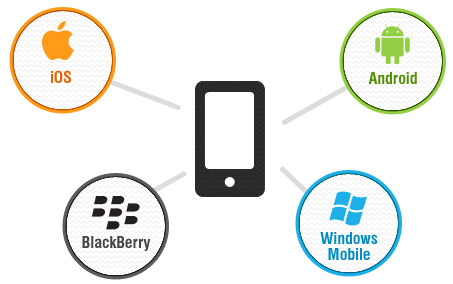

Like an operating system in a PC, mobile phones or other handheld devices also run on operating systems, known as mobile platforms. The latest phones or modern day phones can be compared to handheld computers and their operating systems are also much more complicated and powerful than those of the initial days. The modern day smartphones run on a variety of platforms.
There are Android phones, Blackberry phones, Windows Phones and also the iPhones, all of which run on different and varied platforms of their own. We are one of the best companies that specialises in developing apps for all available mobile platforms as well as cross platform applications.
Designing apps for these different platforms is a challenging process. Many developers prefer to stick to a certain OS for developing apps, whereas some prefer to develop cross platform mobile apps that can be used across a number of mobile platforms.
IOS: objective C and IOS : XCODE are used to develop apps for Mac, iPhone and iPad. Programming with objective C and iOS: XCODE is extremely interesting as per most developers. We have some of the most talented application developers who program and develop applications both on SDK/JAVA and XCODE with the same ease and effectivity.
Today, the most popular smartphones are run on Android platforms. The most popular application for Android phones are designed and developed using Android: Eclipse and Android: SDK/JAVA depending the kind of Android platform and also the kind of apps. Applications for Blackberry OS are developed on Java and hence the preference can be documented as Blackberry: JAVA. Windows based phones have also been among the fastest in catching up smartphone segments.
Apps for Windows phone : SDK/.NET are developed using SDK/.NET softwares. J2MEE can port app to various other phones including the ones with proprietary Operating systems like Blackberry, iPhones using their native UI components. While most of our applications are available for free and also cross platform usage, some are available for a price while a few are dedicated for particular mobile OS. It’s better if you check the compatibility before downloading.
iOS : Objective C
iOS: Objective C is an object oriented programming language and is a general purpose primary programming language used for writing softwares or applications for OS X or iOS. Developed in the 1980s by Apple, the IOS: Objective C development was also used to develop NeXT, for NeXTSTEP operating system, the precursor of OS X and iOS. Objective C was highly influenced by C and small talk, and later went on to inspire the development of Java, Objective Java among others.
It is a static, dynamic and weak typing discipline and the last stable release was 2.0 in 2007. It can also be compiled for systems supported by GCC or CLANG for programmes that do not use Cocoa or Cocoa Touch libraries. We are one of the most respected companies with a team of highly trained and talented developers who work with Objective C.
iOS: Objective C is loaded with some outstanding features and characteristics. Its sends messages rather than calling methods. Resolved at runtime, the target and the message is interpreted by the receiving object. Though, the objective C messaging takes a little longer than traditional C++ virtual method, the subsequent operations are carried out faster.
Objective C requires class of implementation and interface to be separately declared by code blocks. Objective C also allows dynamic typing which allows greater flexibility. Static typing information may also be added to variables. Other than these, sending messages to an object that may not respond is also permitted by Objective C. Our developers who work with iOS: Objective C and iOS: Objective C development services are highly experienced and respected in the industry.
Objective C may be described as a superset of C and is an extremely thin layer atop C. One of the interesting features of Objective C is that its compiler can also compile any C programme. Non-object orientation syntax operations are a derivative from C. Small talk messaging can be regarded as the object orientation features’ precursor. IOS: Objective C Development Services is one of the most favoured because of its easy and user-friendly features. We take pride as one of the leaders in iOS: Objective C development companies that have business ties with most of the leading mobile companies around the world.
Android: Eclipse
Android is one of the most discussed platforms for mobiles, computers, wireless as well as communications. It has revolutionised the smartphone scenario and is becoming one of the fastest operating systems across the world. Android phones working on this operating system, have become one of the fastest selling smartphones around the world. With the sales and usage of Android smartphones, the need and demand for Android apps and cross platform apps for Android phones and other OS run phones are also on the rise.
Also, messenger apps or chat apps connecting cross platform mobiles are also in huge demand. Most developers prefer using Android: Eclipse environment to build Android applications. Eclipse is preferred by most developers because it provides a strong and powerful environment as well as extremely useful and handy Android Eclipse plug ins, also known as the Android Eclipse Development Tools.
Android is albeit a mobile platform that has regular menus, touch screen and other phone options but this operating system takes a completely different approach to the applications. The Android architecture is highly customizable. This is due to the runtime request binding actions in the software environment and to satisfy the requests, the necessary codes are also there.
Our Android Eclipse development services have some of the most talented experts in application development. They design and develop a whole lot of utility applications as well as games and other applications for Android. Most of these applications are available in the internet. They also develop and customize applications for proprietary usage. They are experts in using Android SDK and also the ADT plugin for ECLIPSE.
Eclipse is an Integrated Development Environment and is multilingual. A base work space and its extensible plug in system are some of its features. Mostly written in Java, Eclipse can be used to develop applications in Java and various other programming languages through plug-ins. We have a team of expert programmers who specialize in programming in different languages and use Android: Eclipse to compile some of the most amazing applications for Android and other OS operated mobile phones.
Windows Phone: SDK/.NET
Windows Phone SDK and .NET: opening up new Windows
Microsoft has launched a Windows Phone SDK and .NET focussed more on phones. They make excellent new tools and as an encouragement to developers, the new .NET for Windows Phone 8 is a streamlined version of the .NET Framework 4.5. The new .NET is developed for working specifically with the New Windows 8 based phones.
The integration of CoreCLR, the heart of .NET Framework on top of Windows Phone OS, is the key component of the new .NET Framework for Windows phone. The framework has been overhauled for the new Windows 8 OS based phones. They have also included the async programming models. All these changes are aimed at making apps faster and efficient for all the Windows phones.
The new SDK for Windows phone 8 has also been launched. It can also be installed as an add-on to the Visual Studio 2012 versions. The SDK has a number of features like Windows phone emulators for multiple careen sizes, UI designer for 7.1 and 8 apps as well as expression blend.
Team Foundation Server (TFS) Client for application lifecycle management (ALM) and source control of apps and XNA Game Studio for developing games for all Windows are also available in addition to Team Explorer. Our developers have been developing some excellent and highly effective applications using SDK and .NET for Windows. They have been developing some of the most popular and utility apps for windows phones.
SDK and .NET on Windows Phone allows excellent environment for application building. We are known for developing some of the most useful applications for Windows based phones. Our developers also design some thrilling games for windows based phones. These games range from simple games to strategy and other interesting ones too.
Most of the applications developed by our developers using SDK and .NET for Windows Phone are also developed for multiple platforms also. With the new Windows Phone SDK and .NET, new possibilities and options for a range of new and exciting apps are opening up.
Copyright © 2016 Mgainz Communication Pvt Ltd. - All Rights Reserved.